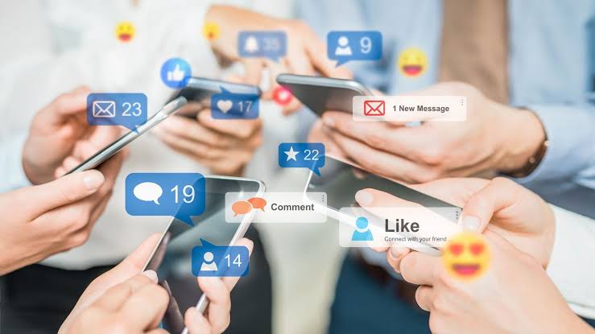
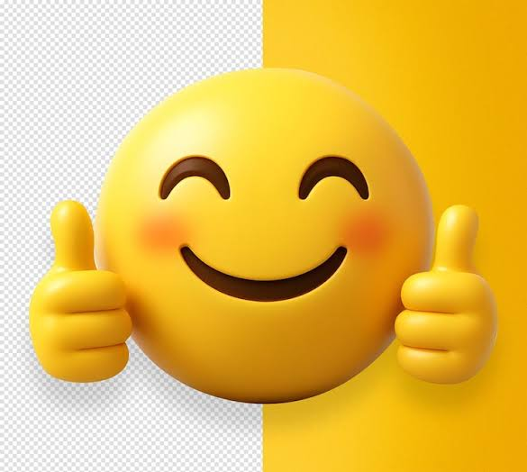
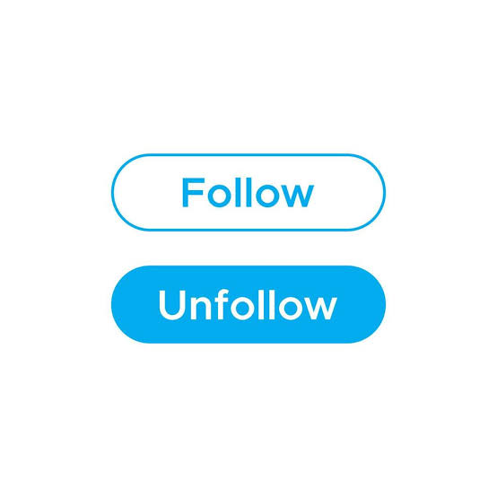
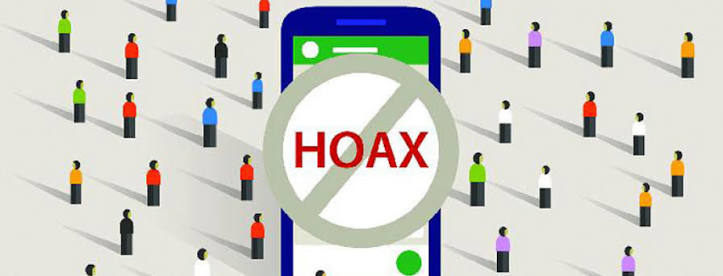
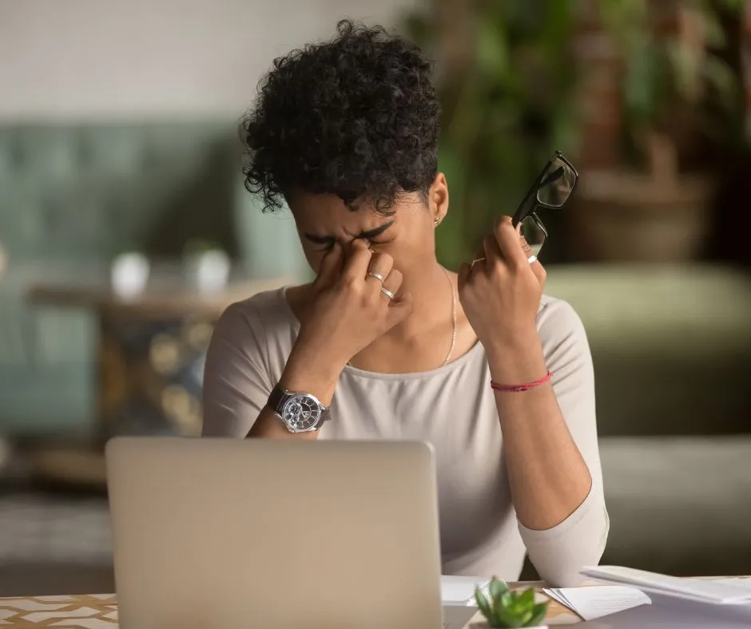

✨Pengertian Media Sosial📲
Media sosial sudah menjadi bagian dari kehidupan sehari-hari, terutama bagi para remaja. Tapi, sebenarnya kita pasti bertanya-tanya, apa itu media sosial atau sosial media? Media sosial sendiri adalah platform berbasis teknologi digital yang memfasilitasi pembuatan dan berbagi informasi, ide, minat karir, serta ekspresi lainnya melalui komunitas dan jaringan virtual. Berbeda dengan media tradisional (seperti koran atau TV) yang bersifat satu arah, media sosial mengedepankan interaktivitas pengguna. Melalui media sosial, kita dapat berkomunikasi dengan jarak jauh, mencari hiburan, dan membagikan berbagai hal. Dalam kehidupan modern, media sosial memberikan banyak sekali manfaat yang berdampak positif. Contohnya, menjadi sumber informasi, membentuk jaringan sosial, dan lainnya. Namun, jika digunakan secara berlebihan atau tidak bijak, media sosial juga dapat memberikan dampak yang kurang baik. Oleh karena itu, kita perlu menggunakan media sosial dengan benar dan bertanggung jawab.
Hal pertama yang perlu diperhatikan adalah menjaga perkataan dan sikap saat menggunakan media sosial. Meskipun kita tidak bertemu langsung dengan orang yang kita ajak berkomunikasi, kita tetap harus menggunakan bahasa yang sopan dan menghargai orang lain. Kita juga sebaiknya tidak menulis komentar yang dapat menyakiti, menghina, atau merendahkan orang lain. Sebelum mengunggah sesuatu, kita dapat berpikir terlebih dahulu apakah unggahan tersebut bermanfaat dan tidak merugikan orang lain.


Hal kedua yang perlu diperhatikan juga adalah dalam menyaring konten yang kamu lihat di sosial media. Tidak semua informasi yang kita temukan di media sosial adalah benar. Sebelum mempercayai suatu berita, kita perlu memeriksa sumbernya terlebih dahulu. Kita bisa mencegah dari berita-berita aneh dengan mengunfollow akun-akun yang membuat kita merasa buruk tentang diri sendiri.


Hal ketiga adalah untuk membatasi waktu layar atau screen time. Terkadang scrolling sosial media, suka membuat pengguna jadi lupa akan waktu, sehingga bisa saja membuat kita terlalu banyak menyaring informasi dari sosial media dan melupakan kegiatan di kehidupan nyata. Hal ini dapat memengaruhi kesehatan tubuh (mata, tulang, dan lainnya), emosi, dan lainnya. Maka itu, kita bisa menyalakan fitur pengingat di ponsel untuk membatasi durasi penggunaan aplikasi sosial media.


Pada akhirnya, media sosial dapat memberikan banyak manfaat jika digunakan dengan bijak. Sebagai remaja, kita bisa memanfaatkannya untuk saling memberi support, belajar secara luas, membangun pertemanan, dan lainnya. Dengan menjaga sikap, menyaring konten, serta membatasi penggunaan sosial media, dijamin kita dapat merasakan manfaat yang sebenarnya dari sosial media itu sendiri. Jadi, gunakan media sosial dengan bijak, karena apa yang kita lakukan di dunia digital juga menunjukkan bagaimana kita bersikap di kehidupan nyata.